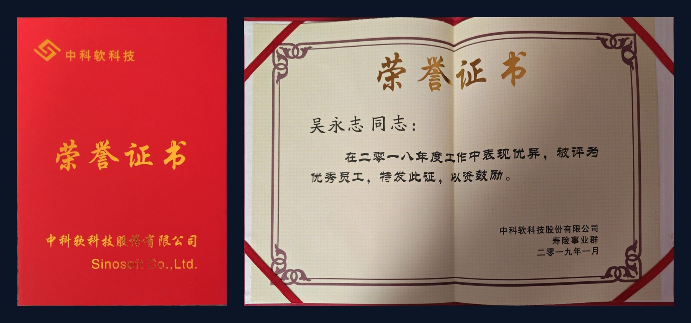
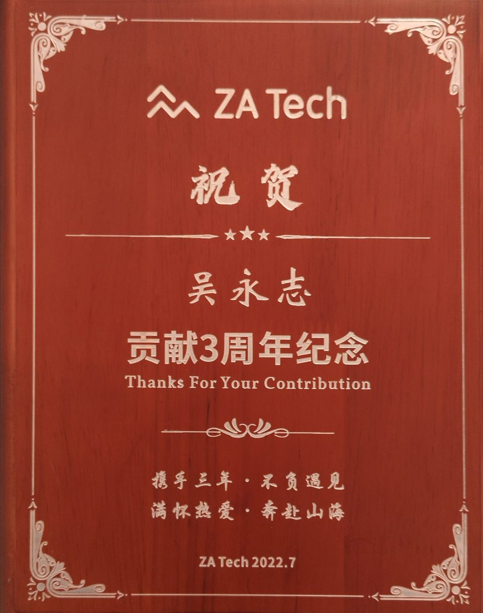

业务纵深
八年深耕保险核心系统，覆盖新契约、保全、理赔、续期续保全链路，具备扎实的领域知识，能快速把复杂业务需求转化为可落地的技术方案。
Java Developer · 8 Years
Java 开发工程师 · 保险核心系统
八年 Java 开发经验，长期深耕保险行业核心系统，覆盖新契约、保全、理赔、续期续保全业务链路。 熟悉 Spring Cloud Alibaba 微服务体系与 DDD 设计思想，具备业务域负责人经验与模块级质量把控能力。
01 Profile
业务理解、微服务实践与工程质量并重，能够独立承接复杂业务域的方案设计与落地。
八年深耕保险核心系统，覆盖新契约、保全、理赔、续期续保全链路，具备扎实的领域知识，能快速把复杂业务需求转化为可落地的技术方案。
熟练使用 Spring Cloud Alibaba、Spring Boot、Spring MVC、MyBatis 等主流框架，熟悉 Redis、Kafka、ActiveMQ、Nacos、OpenFeign、Hystrix、xxl-job 等中间件。
精通 MySQL 及 SQL 性能优化；注重代码的健壮性、可读性与可扩展性，能够承担复杂系统的设计与优化工作。
曾任保全业务域 DL 小组负责人，参与需求分析、方案设计与代码 Review，主导存量模块重构，具备模块级质量把控与团队协作推动能力。
具备 React 使用经验，可以完成基本的前端开发，曾承担电子文件系统的前后端开发工作。
曾获公司年度优秀员工，责任心强，具备良好的沟通意识与团队协作精神。
02 Experience
从日本保险项目起步，历经保险云核心系统与保险 SaaS 平台，逐步成长为业务域负责人。
负责保险 SaaS 平台保全域的核心业务研发与小组质量把控，基于 Spring Cloud Alibaba 微服务体系、遵循 DDD 设计思想进行开发；前期参与日本、东南亚、欧洲等多个国际项目的开发与上线。
保全域业务小组负责人 · 续期续保模块主导 · 小组代码 Review
负责保险云核心系统新契约方向的开发与运维，参与银保通数据落地、短信预警、华泰 E 家 APP 在线投保、微信端在线投保、电子文件系统等多个项目建设。
2018 年度优秀员工
负责日本保险项目的后台开发与测试，参与基于基盘的后台编写及测试、报表生成（VBA）与 Java 开发；实习期间表现优秀，顺利完成转正并继续工作一年。
03 Projects
9 个核心项目，从理赔、投保前端到保全业务域，覆盖微服务架构下的完整交付流程。
业绩完成续期存量代码重构 · 续期新需求与续保整体功能上线 · 多个新保全项业务落地
业绩高质量、准时地完成项目上线任务
业绩实现根据模板与数据动态生成 PDF 的能力
业绩完成需求分析、设计及部分开发实施
业绩共同完成新需求的开发及上线
业绩实习期间表现优秀，顺利转正并继续工作一年
04 Honors
中科软 2018 年度优秀员工，以及众安 ZA Tech 贡献 3 周年纪念。


05 Education
本科 · 软件工程